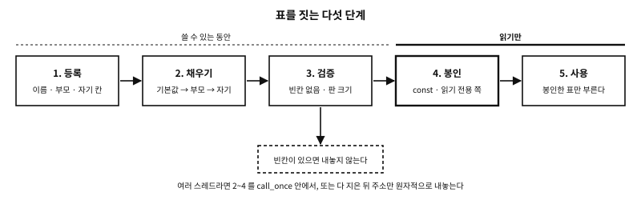
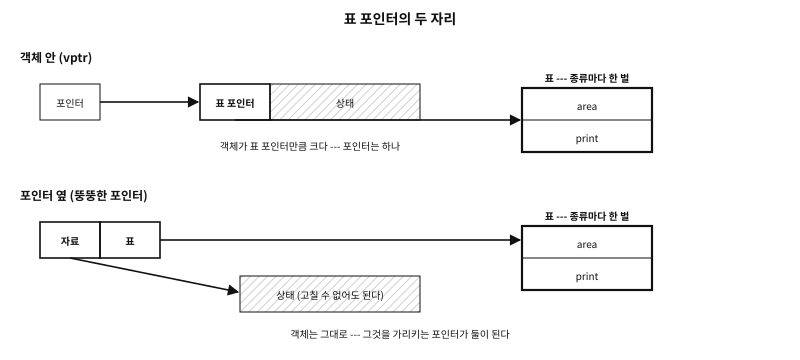
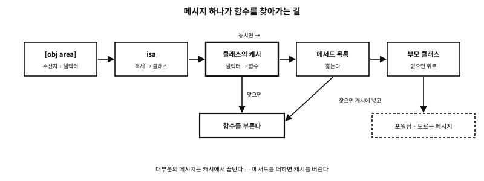

72 동적 가상 테이블 — 짓고, 봉인하고, 찾는다
먼저 알아야 할 것
돌아보기
71장의 함수 포인터 표는 모두 static const 였다. 표가 컴파일 때 정해지지 않는 프로그램도 있는가? 있다면 그런 표는 어떻게 지어야 안전한가?
답. 있다. 플러그인과 드라이버는 실행 중에 들어오고, CPU 를 보고 구현을 고르는 라이브러리는 실행 때에야 표를 채우고, 그래픽 API 의 함수는 장치마다 다르다. 그런 표는 실행 때 짓고, 빈칸이 없는지 검증하고, 다 지은 뒤에는 고치지 못하게 봉인하고, 필요하면 이름으로 찾는다. 그런 표를 거치는 호출이 얼마인지는 다음 장(73장)이 잰다.
이 장의 필요성과 맥락
NULL 을 부르고, 여러 스레드가 함께 지으면 반쯤 찬 표를 보고, 쓸 수 있는 메모리에 둔 표는 공격의 표적이 된다. 짓는 순서와 봉인과 찾는 법을 알아야 플러그인 하나를 받는 프로그램도 안전하게 짤 수 있다.이 장이 끝나면
이 장에서 답할 질문
- 쌍마다 표를 지으면 표가 너무 많아지지 않는가?
72.1 정적 표와 동적 표#
정적 표는 컴파일 때 내용이 다 정해진 표다. static const struct shape_ops circle_ops = { … }; 처럼 소스에 적혀 있고, 실행 중에는 아무도 고치지 않는다. 동적 표(dynamic virtual table)는 실행 중에 짓거나, 고치거나, 찾는 표다. 칸에 들어갈 함수가 실행 때에야 정해지거나, 표의 모양 — 어느 부모를 잇고 어느 칸을 덮을지 — 이 실행 때에야 정해질 때 쓴다.
C23 에는 동적 표라는 기능이 없다. 정적 표도 없다 — 둘 다 구조체와 함수 포인터로 짓는 흉내다. 이 장이 기대는 표준의 조항은 셋이다.
- 함수 포인터의 변환. 함수 포인터는 다른 함수 포인터 타입으로 바꿨다가 되돌릴 수 있다. 그러나 바꾼 타입 그대로 부르면, 함수의 실제 타입과 맞지 않을 때 정의되지 않은 동작이다(C23 §6.3.2.3p8). 플러그인에서 꺼낸 주소를 표의 칸에 넣을 때마다 이 조항이 걸린다. 73장의 CFI 절에서 이 규칙을 어긴 호출을 실제로 본다.
- 원자적 게시. 다 지은 표의 주소를 원자 변수에 넣어 다른 스레드에 내놓으면, 그 주소를 본 스레드는 표의 내용도 본다(release/acquire, §7.17).
call_once. 짓는 일을 정확히 한 번만 하게 한다(§7.28.2.1).
동적 표가 필요한 자리는 넷이다.
| 자리 | 실행 때 정해지는 것 | 예 |
|---|---|---|
| 플러그인 · 드라이버 | 어떤 객체 종류가 있는지 — 실행 중에 적재한다 | dlopen/dlsym(POSIX), LoadLibrary/GetProcAddress(Windows) |
| 기계를 보고 고르기 | 같은 칸에 어느 구현을 넣을지 | glibc 의 memcpy · strlen(아래), __builtin_cpu_supports(GCC · Clang 확장) |
| 실행 때 상속 | 부모의 표가 무엇인지 — 부모를 복사한 뒤 덮어쓴다 | GObject 의 class_init, Xt 의 클래스 초기화(74장) |
| API 로더 | 함수의 주소 — 장치나 드라이버마다 다르다 | Vulkan 의 vkGetDeviceProcAddr, OpenGL 함수 로더 |
표 72.1 — 동적 표가 필요한 자리
둘째 줄의 예는 이 기계에도 있다. glibc 2.41 의 libc.so.6 를 readelf --dyn-syms 로 보면 memcpy 와 strlen 의 기호 종류가 보통 함수(FUNC)가 아니라 IFUNC 다. 프로그램이 적재될 때 glibc 가 CPU 가 지원하는 명령을 보고 구현 여럿 가운데 하나를 골라, 그 주소를 호출 자리에 채운다 — 프로그램마다 한 번 짓는 동적 표다.
네 자리 모두 실행 때에만 아는 것이 있다. 그것이 없으면 동적 표는 필요 없다 — 다음 장의 끝에서 이 말로 다시 돌아온다.
72.2 표를 짓는 다섯 단계#
동적 표는 다섯 단계로 짓는다.

그림 72.1 — 표를 짓는 다섯 단계. 봉인 뒤로는 읽기만 한다.
- 등록. 어떤 객체 종류(클래스)가 있고, 부모가 누구이고, 자기 칸에 무엇을 넣을지를 자료로 받는다. 플러그인 목록, 설정 파일, 공유 라이브러리가 내놓는 설명 구조체(이름 · 부모 · 함수 주소) 같은 것이다.
- 채우기. 기본값 → 부모 → 자기 칸 순서로 채운다. 70장의 기본값 묶음을 실행 때 하는 셈이다 — 종류는 부모와 다른 칸만 적는다.
- 검증. 빈칸이 없는지, 판의 크기가 맞는지 확인한다. 빈칸이 있는 종류는 내놓지 않는다.
- 봉인. 다 지은 표는 더는 고치지 않는다. 읽기 전용 포인터로만 내놓고, 할 수 있으면 표가 든 메모리를 운영체제에 부탁해 읽기 전용으로 바꾼다.
- 사용. 봉인한 표만 부른다.
examples/dynamic-vtables/build_table/build_table.c
/* 표를 실행 때 다섯 단계로 짓는다: 등록, 채우기, 검증, 봉인, 사용.
종류는 `static const` 표가 아니라 자료로 들어온다(플러그인 목록이 그렇듯이).
채우기는 기본값 -> 부모 -> 자기 칸 순서라, 종류는 다른 것만 적는다.
봉인은 표가 든 쪽을 읽기 전용으로 바꾼다(POSIX mprotect).
--write-after-seal 을 주면 봉인 뒤에 칸 하나를 고쳐 본다. */
#define _DEFAULT_SOURCE /* MAP_ANONYMOUS: 리눅스와 BSD, POSIX 2024 */
#include <stdio.h>
#include <string.h>
#include <sys/mman.h>
#include <unistd.h>
struct stream;
typedef int (*slot)(struct stream *);
enum { WRITE, FLUSH, CLOSE, SLOTS };
static const char *const slot_names[SLOTS] = { "write", "flush", "close" };
struct stream_ops { slot s[SLOTS]; };
struct stream { const struct stream_ops *ops; const char *kind; };
/* 행동들 --- 저마다 자기가 누구인지만 말한다 */
#define SAY(fn) static int fn(struct stream *st) { (void)st; return 0; }
SAY(stream_flush_nothing) SAY(stream_close) SAY(file_write) SAY(file_flush)
SAY(gzip_write) SAY(gzip_close) SAY(memory_write)
static const struct { slot fn; const char *name; } fn_names[] = {
{ stream_flush_nothing, "stream_flush_nothing" }, { stream_close, "stream_close" },
{ file_write, "file_write" }, { file_flush, "file_flush" },
{ gzip_write, "gzip_write" }, { gzip_close, "gzip_close" },
{ memory_write, "memory_write" },
};
static const char *name_of(slot f)
{
for (size_t i = 0; i < sizeof fn_names / sizeof fn_names[0]; i++)
if (fn_names[i].fn == f) return fn_names[i].name;
return "(empty)";
}
/* 1. 등록: 플러그인 목록이 적을 만한 것 --- 이름, 부모, 자기 칸 */
struct kind_desc { const char *name, *parent; bool abstract; slot own[SLOTS]; };
static const struct kind_desc descs[] = {
{ "gzip-file", "file", false, { [WRITE] = gzip_write, [CLOSE] = gzip_close } },
{ "file", "stream", false, { [WRITE] = file_write, [FLUSH] = file_flush } },
{ "memory", "stream", false, { [WRITE] = memory_write } },
{ "broken", "stream", false, { [CLOSE] = gzip_close } }, /* write 빠짐 */
{ "stream", nullptr, true,
{ [FLUSH] = stream_flush_nothing, [CLOSE] = stream_close } },
};
#define KINDS (sizeof descs / sizeof descs[0])
static struct stream_ops *tables; /* 따로 한 쪽에 둔다 --- 봉인할 수 있게 */
static bool built[KINDS], published[KINDS];
static size_t page;
static int find(const char *name)
{
for (size_t i = 0; i < KINDS; i++)
if (strcmp(descs[i].name, name) == 0) return (int)i;
return -1;
}
/* 2. 채우기: 부모 먼저(재귀로) → 복사 → 자기 칸 */
static bool fill(int k, int depth)
{
if (built[k]) return true;
if (depth > (int)KINDS) return false; /* 부모가 돌고 돈다 */
struct stream_ops t = {};
if (descs[k].parent) {
int p = find(descs[k].parent);
if (p < 0 || !fill(p, depth + 1)) return false;
t = tables[p];
}
for (int s = 0; s < SLOTS; s++)
if (descs[k].own[s]) t.s[s] = descs[k].own[s];
tables[k] = t;
built[k] = true;
return true;
}
int main(int argc, char **argv)
{
bool attack = argc > 1 && strcmp(argv[1], "--write-after-seal") == 0;
long ps = sysconf(_SC_PAGESIZE);
page = ps > 0 ? (size_t)ps : 4096;
if (KINDS * sizeof *tables > page) { puts("too many tables for a page"); return 1; }
tables = mmap(nullptr, page, PROT_READ | PROT_WRITE,
MAP_PRIVATE | MAP_ANONYMOUS, -1, 0);
if (tables == MAP_FAILED) { puts("mmap failed"); return 1; }
for (int k = 0; k < (int)KINDS; k++)
if (!fill(k, 0)) { printf("cannot build %s\n", descs[k].name); return 1; }
puts("built (defaults -> parent -> own slots):");
for (size_t k = 0; k < KINDS; k++) {
printf(" %-10s", descs[k].name);
for (int s = 0; s < SLOTS; s++)
printf(s + 1 < SLOTS ? " %s=%-20s" : " %s=%s",
slot_names[s], name_of(tables[k].s[s]));
puts(descs[k].abstract ? " (abstract)" : "");
}
/* 3. 검증: 빈칸이 있는 종류는 내놓지 않는다. 추상 종류는 늘 */
for (size_t k = 0; k < KINDS; k++) {
published[k] = !descs[k].abstract;
for (int s = 0; s < SLOTS && published[k]; s++)
if (!tables[k].s[s]) {
printf("verify: %s has no %s --- not published\n",
descs[k].name, slot_names[s]);
published[k] = false;
}
}
/* 4. 봉인: 여기부터 표는 읽기만 한다 */
if (mprotect(tables, page, PROT_READ) != 0) { puts("mprotect failed"); return 1; }
const struct stream_ops *sealed = tables;
puts("sealed: the page holding the tables is read-only");
/* 5. 사용 */
for (size_t k = 0; k < KINDS; k++) {
if (!published[k]) continue;
struct stream st = { &sealed[k], descs[k].name };
int r = st.ops->s[WRITE](&st) | st.ops->s[FLUSH](&st) | st.ops->s[CLOSE](&st);
printf("use: a %s stream wrote, flushed and closed%s\n",
st.kind, r ? " (error)" : "");
}
if (attack) {
puts("now overwriting gzip-file's write slot...");
fflush(stdout);
tables[find("gzip-file")].s[WRITE] = memory_write; /* 읽기 전용 쪽 */
puts("the write went through");
}
munmap(tables, page);
return 0;
}
실행 결과
built (defaults -> parent -> own slots):
gzip-file write=gzip_write flush=file_flush close=gzip_close
file write=file_write flush=file_flush close=stream_close
memory write=memory_write flush=stream_flush_nothing close=stream_close
broken write=(empty) flush=stream_flush_nothing close=gzip_close
stream write=(empty) flush=stream_flush_nothing close=stream_close (abstract)
verify: broken has no write --- not published
sealed: the page holding the tables is read-only
use: a gzip-file stream wrote, flushed and closed
use: a file stream wrote, flushed and closed
use: a memory stream wrote, flushed and closed
== again, with --write-after-seal
built (defaults -> parent -> own slots):
gzip-file write=gzip_write flush=file_flush close=gzip_close
file write=file_write flush=file_flush close=stream_close
memory write=memory_write flush=stream_flush_nothing close=stream_close
broken write=(empty) flush=stream_flush_nothing close=gzip_close
stream write=(empty) flush=stream_flush_nothing close=stream_close (abstract)
verify: broken has no write --- not published
sealed: the page holding the tables is read-only
use: a gzip-file stream wrote, flushed and closed
use: a file stream wrote, flushed and closed
use: a memory stream wrote, flushed and closed
now overwriting gzip-file's write slot...
stopped by signal 11 (SIGSEGV)
종류 다섯이 자료로 들어온다. gzip-file 은 file 을 잇고 file 은 stream 을 잇는데, 목록에는 자식이 부모보다 먼저 온다 — 실제 플러그인 목록도 순서를 지켜 주지 않는다. fill 은 부모의 표를 먼저(재귀로) 지은 뒤 그 표를 복사하고 자기 칸을 덮는다. 그래서 gzip-file 의 flush 는 아무도 적지 않았는데도 부모에게서 온 file_flush 다. A 의 부모가 B 이고 B 의 부모가 A 인 잘못된 목록이면 재귀가 끝나지 않으므로, 몇 단계 올라갔는지 세어 종류 수를 넘으면 멈춘다.
검증이 두 종류를 걸렀다. stream 은 write 가 없는 추상 종류라 처음부터 내놓지 않고, broken 은 write 를 잊어서 내놓지 않았다. 빈칸을 부르는 자리마다 확인하는 대신, 내놓는 자리에서 한 번 막은 것이다 — 70장에서 표의 빈칸을 다룬 판단을 실행 때로 옮겼다.
72.2.1 봉인#
봉인은 두 겹이다.
첫째 겹은 타입이다. 다 지은 표를 const struct stream_ops * 로만 내놓으면, 그 포인터를 받은 코드가 칸을 고치려 할 때 컴파일러가 오류를 낸다. 그러나 이것은 그 포인터를 거친 쓰기만 막는다. 표를 지을 때 쓴 원래의 포인터나, 옆 버퍼가 넘쳐서 생긴 쓰기는 막지 못한다.
둘째 겹은 메모리다. 운영체제는 메모리를 페이지라는 단위(이 기계에서 4 KiB)로 나눠 페이지마다 「읽기만」 「읽고 쓰기」 같은 권한을 둔다. 예제는 표를 따로 한 페이지에 짓고, 다 지은 뒤 mprotect 로 그 페이지를 읽기 전용으로 바꿨다. 그 뒤로는 어떤 포인터로 써도 CPU 가 막는다 — 출력의 둘째 실행(--write-after-seal)은 봉인한 칸에 쓰려다 SIGSEGV 로 멈췄다.
플랫폼 노트. mmap · mprotect
MAP_ANONYMOUS 는 리눅스와 BSD 에 오래 있었고 POSIX 에는 2024년 판에 들어왔다. 예제는 _DEFAULT_SOURCE 로 glibc 에서 그 이름을 연다. Windows 의 짝은 VirtualAlloc · VirtualProtect 다 — 이 책은 시험하지 않았다. 페이지 크기는 sysconf(_SC_PAGESIZE) 로 묻는다.흔한 오해. “표를 읽기 전용으로 봉인했으니 표를 거치는 호출은 안전하다”
72.2.2 여러 스레드에서 한 번만 짓기#
표를 처음 쓸 때 짓는 게으른 짓기에는 함정이 있다.
static struct ops table;
static bool built;
const struct ops *get_table(void)
{
if (!built) { fill(&table); built = true; } /* 두 스레드가 함께 들어오면? */
return &table;
}두 스레드가 함께 들어오면 둘 다 표를 짓는다. 더 나쁘게는, 한 스레드가 built 가 참인 것을 보았을 때 다른 스레드가 채우던 표는 아직 반쯤 채워져 있을 수 있다. 같은 변수를 동기화 없이 한쪽은 쓰고 한쪽은 읽는 것은 데이터 경쟁이고, 정의되지 않은 동작이다(94장). 컴파일러는 스레드 하나만 놓고 보면 결과가 같으므로 built = true 를 표를 채우는 쓰기보다 앞으로 옮겨도 된다.
길은 둘이다. 첫째는 call_once 다. 짓는 함수를 정확히 한 번 돌리고, 부른 쪽은 모두 그 함수가 끝난 뒤에야 돌아온다.
examples/dynamic-vtables/once.c
/* 한 번 짓고 한 번 내놓는다: 스레드 여덟이 한꺼번에 표를 달라고 한다.
call_once 는 짓는 함수를 정확히 한 번 돌리고, 부른 쪽은 모두 그것이 끝난 뒤에야
돌아온다 --- 그래서 반쯤 채운 표를 보는 스레드가 없다. */
#include <stdatomic.h>
#include <stdio.h>
#include <threads.h>
struct ops { int (*area)(int); int (*perimeter)(int); };
static int sq_area(int s) { return s * s; }
static int sq_perimeter(int s) { return 4 * s; }
static struct ops table; /* 실행 때 채우고, 그 뒤로는 읽기만 */
static once_flag table_once = ONCE_FLAG_INIT;
static atomic_int builds;
static void build(void)
{
atomic_fetch_add(&builds, 1);
table.area = sq_area;
thrd_sleep(&(struct timespec){ .tv_nsec = 20'000'000 }, nullptr); /* 느린 짓기 */
table.perimeter = sq_perimeter;
}
static const struct ops *get_table(void)
{
call_once(&table_once, build);
return &table;
}
enum { THREADS = 8 };
static const struct ops *seen[THREADS];
static int answer[THREADS];
static int worker(void *arg)
{
int i = *(int *)arg;
seen[i] = get_table();
answer[i] = seen[i]->area(3) + seen[i]->perimeter(3); /* 두 칸 다 있다 */
return 0;
}
int main(void)
{
thrd_t t[THREADS];
int id[THREADS];
for (int i = 0; i < THREADS; i++) {
id[i] = i;
if (thrd_create(&t[i], worker, &id[i]) != thrd_success) {
puts("thrd_create failed");
return 1;
}
}
for (int i = 0; i < THREADS; i++) thrd_join(t[i], nullptr);
bool same = true, right = true;
for (int i = 0; i < THREADS; i++) {
same = same && seen[i] == seen[0];
right = right && answer[i] == 9 + 12;
}
printf("%d threads asked; the builder ran %d time(s)\n",
THREADS, atomic_load(&builds));
printf("every thread got the same table: %s\n", same ? "yes" : "no");
printf("every answer was area 9 + perimeter 12 = 21, both slots filled: %s\n",
right ? "yes" : "no");
return 0;
}
실행 결과
8 threads asked; the builder ran 1 time(s)
every thread got the same table: yes
every answer was area 9 + perimeter 12 = 21, both slots filled: yes
일부러 느리게 지었다 — 첫 칸(area)을 채운 뒤 20 ms 를 쉬고 둘째 칸(perimeter)을 채운다. 그래도 스레드 여덟이 모두 같은 표를 받았고, 모두 두 칸을 다 불러 9 + 12 = 21 을 얻었다. 반쯤 찬 표를 본 스레드가 있었다면 둘째 칸이 비어 있었을 것이다.
둘째 길은 원자적 게시다. 표를 다 지은 뒤 그 주소를 memory_order_release 로 원자 포인터에 넣고, 읽는 쪽은 memory_order_acquire 로 꺼낸다(95장). 그러면 주소가 보이는 스레드에는 그 앞의 쓰기 — 표의 모든 칸 — 도 보인다. call_once 보다 손이 가지만, 표를 바꿔 끼울 수 있다 — 새 표를 따로 다 지은 뒤 주소만 바꾸면 된다. 다만 옛 표를 언제 지울지는 따로 풀어야 한다 — 아직 그 표를 쥔 스레드가 있을 수 있다.
플랫폼 노트. ThreadSanitizer 와 <threads.h>
get_table)를 ThreadSanitizer(-fsanitize=thread)로 잡아 보이려 했으나, 이 기계(glibc 2.41, GCC 14.2 · Clang 19.1)에서는 thrd_create 로 만든 스레드 아래에서 TSan 자신이 멈췄다. pthread_create 로 바꾸면 두 컴파일러 모두 「data race」를 알렸다.72.3 표 포인터를 어디에 두는가#
지금까지는 표 포인터가 객체 안에 있었다 — 첫 멤버 ops. C++ 의 흔한 구현, GObject, 리눅스 커널이 이 모양이다. 다른 모양은 표 포인터를 객체를 가리키는 포인터 옆에 두는 것이다. 자료를 가리키는 포인터와 표를 가리키는 포인터를 한 쌍으로 묶어 들고 다닌다. 보통 포인터의 두 배 크기라서 이 쌍을 뚱뚱한 포인터(fat pointer)라 부른다. Go 의 인터페이스 값과 Rust 의 &dyn Trait 가 이 모양이다.

그림 72.2 — 표 포인터를 객체 안에 둘 때(위)와 포인터 옆에 둘 때(아래).
examples/dynamic-vtables/fat.c
/* 뚱뚱한 포인터: 자료를 가리키는 포인터와 표를 가리키는 포인터를 함께 들고 다닌다.
표가 객체 바깥에 있으니, 고칠 수 없는 타입에도 인터페이스를 붙인다 ---
여기서는 표준 라이브러리의 struct tm 과 그냥 double.
객체는 아무것도 치르지 않고, 그것을 가리키는 포인터마다 두 배로 넓어진다. */
#include <stdio.h>
#include <time.h>
struct printable_ops { void (*print)(const void *self); const char *type; };
struct printable { const void *self; const struct printable_ops *ops; }; /* 포인터 둘 */
static void print_tm(const void *self)
{
const struct tm *t = self;
printf("%04d-%02d-%02d", t->tm_year + 1900, t->tm_mon + 1, t->tm_mday);
}
static void print_double(const void *self) { printf("%.3f", *(const double *)self); }
/* 견주려고 둔 「vptr」 길: 표 포인터가 객체 안에 있다 */
struct point_ops;
struct point { const struct point_ops *ops; double x, y; };
struct point_ops { void (*print)(const struct point *); };
static void print_point(const struct point *p) { printf("(%g, %g)", p->x, p->y); }
static const struct point_ops point_ops = { print_point };
static void print_point_any(const void *self) { print_point(self); }
static const struct printable_ops tm_printable = { print_tm, "struct tm" };
static const struct printable_ops double_printable = { print_double, "double" };
static const struct printable_ops point_printable = { print_point_any, "struct point" };
static void print_all(const struct printable *xs, size_t n)
{
for (size_t i = 0; i < n; i++) {
printf(" %-13s ", xs[i].ops->type);
xs[i].ops->print(xs[i].self);
putchar('\n');
}
}
int main(void)
{
struct tm day = { .tm_year = 2026 - 1900, .tm_mon = 10, .tm_mday = 6 };
double ratio = 1.618;
struct point p = { &point_ops, 3, 4 };
struct printable xs[] = {
{ &day, &tm_printable }, { &ratio, &double_printable }, { &p, &point_printable },
};
puts("one interface, three types --- two of them never heard of it:");
print_all(xs, sizeof xs / sizeof xs[0]);
printf("sizeof(struct tm) %zu, unchanged; sizeof(double) %zu, unchanged\n",
sizeof day, sizeof ratio);
printf("sizeof(struct point) %zu --- it carries its own table pointer\n", sizeof p);
printf("a plain pointer %zu bytes, a fat pointer %zu bytes\n",
sizeof(void *), sizeof(struct printable));
return 0;
}
실행 결과
one interface, three types --- two of them never heard of it:
struct tm 2026-11-06
double 1.618
struct point (3, 4)
sizeof(struct tm) 56, unchanged; sizeof(double) 8, unchanged
sizeof(struct point) 24 --- it carries its own table pointer
a plain pointer 8 bytes, a fat pointer 16 bytes
한 인터페이스 printable 로 세 타입을 찍었다. struct tm 은 표준 라이브러리의 구조체이고, double 은 구조체조차 아니다 — 둘 다 우리가 멤버를 더할 수 없다. 그래도 인터페이스를 바깥에서 붙였고, 두 타입의 크기는 그대로다. 셋째 struct point 는 우리 타입이라 견주려고 표 포인터를 객체 안에 두었다 — 그만큼 8바이트 커져 24바이트다. 뚱뚱한 포인터 쪽이 치른 것은 마지막 줄에 나온다 — 포인터가 8바이트에서 16바이트로 넓어졌다.
| 견줄 것 | 객체 안에 둔다 — vptr | 포인터 옆에 둔다 — 뚱뚱한 포인터 |
|---|---|---|
| 객체의 크기 | 표 포인터 하나만큼 커진다 | 그대로 |
| 포인터의 크기 | 보통 포인터 하나 | 포인터 둘 |
| 고칠 수 없는 타입에 인터페이스 | 못 붙인다 — 멤버를 더해야 한다 | 바깥에서 붙인다 |
| 한 객체, 여러 인터페이스 | 표를 여럿 품거나 찾기가 필요하다(다음 절) | 인터페이스마다 다른 쌍을 만들면 된다 |
포인터 하나만 받는 API(콜백의 void *) | 그대로 넘긴다 | 쌍을 어딘가에 두고 그 주소를 넘겨야 한다 |
표 72.2 — 표 포인터의 두 자리
어느 쪽이 낫다고 말할 수 없다 — 맞바꾸는 것이다. 메모리만 따지면 셈은 간단하다. 객체 백만 개를 포인터 하나씩으로 가리키면, 객체 안의 표 포인터는 8 MB 를 더 쓰고 뚱뚱한 포인터도 8 MB 를 더 쓴다. 객체 하나를 포인터 열 개가 가리키면 뚱뚱한 쪽이 열 배를 더 쓰고, 객체가 많고 포인터가 적으면 거꾸로다.
72.4 여러 인터페이스와 찾기#
객체 하나가 여러 역할을 할 때가 있다. 도형이면서, 파일에 저장할 수 있고, 다른 도형과 크기를 비교할 수 있다. 역할마다 표 하나 — 인터페이스 — 를 두면, 부르는 쪽은 이 객체에서 이 역할의 표를 얻어야 한다. 그것을 찾는 길이 셋 있다.
- COM 의
QueryInterface. 객체의 첫 표에는 늘QueryInterface가 있다. 원하는 인터페이스의 번호(IID, 128비트 식별자)를 주고 물으면, 그 인터페이스의 표를 가리키는 포인터를 돌려주거나 「없다」고 답한다. C 에서는obj->lpVtbl->QueryInterface(obj, &IID_…, &out)로 부른다(74장). - GObject 의
g_type_interface_peek. 클래스 구조체와 인터페이스 타입을 주면, 그 클래스가 구현한 인터페이스 구조체를 돌려준다. 타입 체계가 클래스마다 인터페이스 목록을 들고 있다. - Go 의 itab. 인터페이스 값은 뚱뚱한 포인터이고, 그 표 쪽이 (인터페이스, 구체 타입) 쌍마다 하나인 itab 이다. Go 의 타입은 자기가 어느 인터페이스를 따르는지 적지 않는다. 그래서 런타임이 어떤 쌍을 처음 만났을 때 메서드를 이름으로 맞춰 itab 을 짓고, 해시 표에 넣어 둔다. 맞지 않은 쌍도 「맞지 않음」으로 넣어 둔다.1
마지막 길을 C 로 지어 본다.
examples/dynamic-vtables/itab.c
/* (인터페이스, 구체 타입) 쌍마다 표 하나 --- 처음 쓸 때 실행 때 짓고 해시 표에 둔다.
Go 의 itab 의 생각을 C 로.
타입은 메서드를 이름으로 늘어놓을 뿐, 어느 인터페이스를 만족하는지 말하지 않는다.
맞지 않은 쌍도 캐시한다 --- 다시 물으면 다시 짓지 않고 찾기만 한다. */
#include <stdint.h>
#include <stdio.h>
#include <stdlib.h>
#include <string.h>
typedef double (*fn)(const void *self);
struct method { const char *name; fn f; };
struct type { const char *name; const struct method *methods; size_t n; };
struct iface { const char *name; const char *const *wants; size_t n; };
struct itab { const struct iface *in; const struct type *ty; bool ok; fn fun[4]; };
/* ---- 캐시: 열린 주소법, 열쇠는 포인터 쌍 ---- */
enum { SLOTS = 64 };
static struct itab *cache[SLOTS];
static unsigned builds, hits;
static size_t hash(const struct iface *in, const struct type *ty)
{
uintptr_t h = (uintptr_t)in * 31 ^ (uintptr_t)ty;
return (size_t)(h ^ h >> 7) % SLOTS;
}
static struct itab *build(const struct iface *in, const struct type *ty)
{
struct itab *t = calloc(1, sizeof *t);
if (!t) return nullptr;
*t = (struct itab){ in, ty, true, {} };
builds++;
for (size_t w = 0; w < in->n && w < 4; w++) { /* 이름으로, 차례대로 맞춘다 */
fn found = nullptr;
for (size_t m = 0; m < ty->n; m++)
if (strcmp(ty->methods[m].name, in->wants[w]) == 0) found = ty->methods[m].f;
if (!found) { t->ok = false; break; }
t->fun[w] = found;
}
return t;
}
static const struct itab *get_itab(const struct iface *in, const struct type *ty)
{
size_t i = hash(in, ty);
for (size_t probes = 0; probes < SLOTS; probes++, i = (i + 1) % SLOTS) {
if (!cache[i]) return cache[i] = build(in, ty); /* 처음이면 짓고 둔다 */
if (cache[i]->in == in && cache[i]->ty == ty) { hits++; return cache[i]; }
}
return nullptr; /* 캐시가 찼다 */
}
/* ---- 인터페이스를 모르는 타입들 ---- */
struct circle { double r; };
struct label { const char *text; };
static double circle_area(const void *s)
{ const struct circle *c = s; return 3.0 * c->r * c->r; }
static double circle_perimeter(const void *s)
{ const struct circle *c = s; return 6.0 * c->r; }
static double label_length(const void *s)
{ const struct label *l = s; return (double)strlen(l->text); }
static const struct method circle_m[] = {
{ "area", circle_area }, { "perimeter", circle_perimeter },
};
static const struct method label_m[] = { { "length", label_length } };
static const struct type circle_t = { "circle", circle_m, 2 };
static const struct type label_t = { "label", label_m, 1 };
static const char *const shape_wants[] = { "area", "perimeter" };
static const struct iface shape_i = { "Shape", shape_wants, 2 };
/* 인터페이스 값: itab 과 자료 --- 뚱뚱한 포인터 */
struct shape_value { const struct itab *tab; const void *data; };
static bool as_shape(const struct type *ty, const void *data, struct shape_value *out)
{
const struct itab *t = get_itab(&shape_i, ty);
if (!t || !t->ok) return false;
*out = (struct shape_value){ t, data };
return true;
}
int main(void)
{
struct circle cs[] = { { 1 }, { 2 }, { 0.5 } };
struct label lb = { "hello" };
for (size_t i = 0; i < 3; i++) {
struct shape_value v;
if (as_shape(&circle_t, &cs[i], &v))
printf("circle %.1f as Shape: area %.2f, perimeter %.2f\n",
cs[i].r, v.tab->fun[0](v.data), v.tab->fun[1](v.data));
}
for (int i = 0; i < 2; i++) {
struct shape_value v;
bool ok = as_shape(&label_t, &lb, &v);
printf("label as Shape: %s\n", ok ? "yes" : "no --- it has no area");
}
printf("tables built %u (one per pair, the failure too), cache hits %u\n",
builds, hits);
for (size_t i = 0; i < SLOTS; i++) free(cache[i]);
return 0;
}
실행 결과
circle 1.0 as Shape: area 3.00, perimeter 6.00
circle 2.0 as Shape: area 12.00, perimeter 12.00
circle 0.5 as Shape: area 0.75, perimeter 3.00
label as Shape: no --- it has no area
label as Shape: no --- it has no area
tables built 2 (one per pair, the failure too), cache hits 3
원 셋을 Shape 로 쓰는 동안 표는 한 번만 지어졌고 나머지 둘은 캐시에서 나왔다. label 은 area 가 없어 Shape 가 아니다. 「맞지 않음」도 캐시에 남았으므로 두 번째 질문은 다시 짓지 않고 캐시에서 끝났다 — 마지막 줄의 tables built 2 는 원 하나, 레이블 하나이고, cache hits 3 은 원 둘과 레이블 하나다.
문. 쌍마다 표를 지으면 표가 너무 많아지지 않는가?
답. 짓는 것은 실제로 만난 쌍뿐이다. 인터페이스가 백 개, 타입이 천 개여도 프로그램이 실제로 묻는 쌍은 그보다 훨씬 적다. 처음 한 번은 이름을 맞추느라 비싸지만, 그 뒤로는 해시 찾기 한 번이다. 더 줄이려면 호출 자리마다 「지난번 쌍」을 기억해 둔다 — 73장에서 잴 인라인 캐시의 생각이다.
72.5 이름으로 찾는 디스패치#
지금까지의 표는 칸의 자리로 함수를 골랐다 — ops->area 는 「표의 첫 칸」이고, 그 자리는 컴파일 때 정해진다. Smalltalk 와 Objective-C 는 이름으로 고른다. 객체에 메시지 area 를 보내면, 런타임이 그 객체의 클래스에서 area 라는 이름의 메서드를 찾는다. 이름을 그때마다 문자열로 비교하면 느리므로, 이름마다 번호를 하나씩 붙여 두고 번호로 찾는다. 이 번호를 셀렉터(selector)라 부른다. 70장에서 본 Alan Kay 의 생각 — 객체는 메시지로만 서로 통한다 — 에 가장 가까운 모양이다.

그림 72.3 — 메시지 하나가 함수를 찾아가는 길. 대부분은 클래스의 캐시에서 끝난다.
examples/dynamic-vtables/lookup.c
/* 이름(셀렉터)으로 찾는 디스패치 --- Smalltalk · Objective-C 의 길을 C 로.
1. 메시지 이름은 한 번 인턴해 정수 셀렉터로 바꾼다.
2. 클래스의 메서드 목록을 훑고, 없으면 부모로 올라간다.
3. 찾은 것은 클래스별 캐시에 넣는다. 다음부터는 캐시에서 끝난다.
4. 끝내 없으면 「모르는 메시지」 처리기로 넘긴다(포워딩).
5. 실행 때 메서드를 더하면 세대 번호를 올려 모든 캐시를 한꺼번에 버린다. */
#include <stdio.h>
#include <string.h>
#define MAX_SELECTORS 32
#define MAX_METHODS 8
#define CACHE_SLOTS 8
struct object;
typedef double (*imp)(struct object *self);
struct method { unsigned sel; imp fn; };
struct cache_slot { unsigned sel; imp fn; unsigned epoch; };
struct class {
const char *name;
struct class *parent;
struct method methods[MAX_METHODS];
unsigned n_methods;
struct cache_slot cache[CACHE_SLOTS];
};
struct object { struct class *isa; double size; };
/* ---- 셀렉터 인턴 ---- */
static const char *selector_names[MAX_SELECTORS];
static unsigned n_selectors;
static unsigned intern(const char *name)
{
for (unsigned i = 0; i < n_selectors; i++)
if (strcmp(selector_names[i], name) == 0) return i + 1;
if (n_selectors == MAX_SELECTORS) return 0;
selector_names[n_selectors++] = name;
return n_selectors; /* 0 은 「셀렉터 없음」으로 남긴다 */
}
/* ---- 찾기 ---- */
static unsigned epoch = 1; /* 메서드가 바뀔 때마다 오른다 */
static unsigned slow_lookups, cache_hits;
static imp lookup_slow(const struct class *c, unsigned sel)
{
slow_lookups++;
for (; c; c = c->parent)
for (unsigned i = 0; i < c->n_methods; i++)
if (c->methods[i].sel == sel) return c->methods[i].fn;
return nullptr;
}
static imp lookup(struct class *c, unsigned sel)
{
struct cache_slot *slot = &c->cache[sel % CACHE_SLOTS];
if (slot->sel == sel && slot->epoch == epoch) { cache_hits++; return slot->fn; }
imp fn = lookup_slow(c, sel);
*slot = (struct cache_slot){ sel, fn, epoch }; /* 「없음」도 캐시한다 */
return fn;
}
static bool add_method(struct class *c, const char *name, imp fn)
{
if (c->n_methods == MAX_METHODS) return false;
c->methods[c->n_methods++] = (struct method){ intern(name), fn };
epoch++; /* 모든 클래스의 캐시가 한꺼번에 낡는다 */
return true;
}
/* ---- 보내기 ---- */
static double does_not_understand(struct object *self, unsigned sel)
{
printf(" %s does not understand '%s'\n", self->isa->name,
sel ? selector_names[sel - 1] : "(selector table full)");
return 0;
}
static double send(struct object *self, const char *message)
{
unsigned sel = intern(message);
imp fn = sel ? lookup(self->isa, sel) : nullptr;
return fn ? fn(self) : does_not_understand(self, sel);
}
/* ---- 클래스들 ---- */
static double shape_describe(struct object *self)
{ printf(" a %s of size %g\n", self->isa->name, self->size); return 0; }
static double circle_area(struct object *self) { return 3.0 * self->size * self->size; }
static double square_area(struct object *self) { return self->size * self->size; }
static double shape_perimeter(struct object *self) { return 4.0 * self->size; }
static struct class shape = { .name = "Shape" };
static struct class circle = { .name = "Circle", .parent = &shape };
static struct class square = { .name = "Square", .parent = &shape };
int main(void)
{
add_method(&shape, "describe", shape_describe);
add_method(&circle, "area", circle_area);
add_method(&square, "area", square_area);
struct object things[] = { { &circle, 2 }, { &square, 3 }, { &circle, 1 } };
puts("send 'describe' (inherited) and 'area' (own) to each:");
for (size_t i = 0; i < sizeof things / sizeof things[0]; i++) {
send(&things[i], "describe");
printf(" area = %g\n", send(&things[i], "area"));
}
printf("slow lookups %u, cache hits %u\n\n", slow_lookups, cache_hits);
puts("send 'perimeter', which nobody defines yet:");
send(&things[0], "perimeter");
send(&things[0], "perimeter"); /* 「없음」도 캐시에서 나온다 */
printf("slow lookups %u, cache hits %u\n\n", slow_lookups, cache_hits);
puts("add 'perimeter' to Shape at run time, then send again:");
add_method(&shape, "perimeter", shape_perimeter);
printf(" perimeter = %g\n", send(&things[0], "perimeter"));
printf(" perimeter = %g\n", send(&things[1], "perimeter"));
printf("slow lookups %u, cache hits %u\n", slow_lookups, cache_hits);
return 0;
}
실행 결과
send 'describe' (inherited) and 'area' (own) to each:
a Circle of size 2
area = 12
a Square of size 3
area = 9
a Circle of size 1
area = 3
slow lookups 4, cache hits 2
send 'perimeter', which nobody defines yet:
Circle does not understand 'perimeter'
Circle does not understand 'perimeter'
slow lookups 5, cache hits 3
add 'perimeter' to Shape at run time, then send again:
perimeter = 8
perimeter = 12
slow lookups 7, cache hits 3
출력에서 셀렉터 디스패치의 다섯 가지 성질을 본다.
- 이름은 처음 한 번만 비교한다.
intern("area")는 처음 불릴 때 이름 목록에area를 넣고 번호를 준다(이렇게 이름을 한 번만 등록해 번호로 바꾸는 것을 인턴이라 부른다). 그 뒤로 같은 이름은 늘 같은 번호다. - 부모 사슬.
describe는Circle에 없고Shape에 있다. 찾기는 클래스에서 부모로 올라간다 — 상속이 찾는 순서가 되었다. - 클래스별 캐시. 찾은 것은 그 클래스의 캐시에 넣는다. 출력의 첫 단락 끝에 있는
slow lookups 4는Circle과Square가 메시지 두 개씩을 처음 찾은 것이고, 셋째 객체(다시Circle)의 두 메시지는 캐시에서 끝났다(cache hits 2). - 모르는 메시지.
perimeter는 아무도 정의하지 않았다. 표의 칸이었다면 컴파일러가 막았을 일이 여기서는 실행 때 처리기로 간다. Objective-C 는 이 자리에서 메시지를 다른 객체에 넘길 수 있는데, 이것을 포워딩(forwarding)이라 한다. 「없음」도 캐시하므로 두 번째perimeter는 느린 찾기를 하지 않았다(slow lookups 5, cache hits 3). - 실행 때 메서드 더하기. 프로그램은 메서드 목록이 바뀔 때마다 하나씩 올리는 전역 번호(세대 번호)를 두고, 캐시의 각 칸에는 넣을 때의 세대 번호를 적어 둔다.
Shape에perimeter를 더하자 세대 번호가 올라 모든 캐시 칸이 한꺼번에 낡은 것이 되었다. 그래서 다음 두 메시지는 다시 느린 찾기를 했다(slow lookups 7) — 낡은 「없음」을 믿지 않는다.
이 방식의 유연함은 분명하다. 클래스를 다시 컴파일하지 않고 메서드를 더하고, 모르는 메시지를 받아 넘기고, 남이 만든 클래스에 메서드를 붙인다(Objective-C 의 카테고리, 74장). 비용은 찾기다. 캐시에 있으면 해시 한 번이고, 없으면 목록을 훑고 부모로 오른다 — 그 차이를 다음 장이 잰다. 그리고 컴파일러가 틀린 이름을 잡지 못한다 — 오타는 실행 때 「모르는 메시지」가 된다.
72.6 판이 바뀌는 표#
71장에서 구조체에 크기를 적어 판이 바뀌어도 견디게 했다. 표에도 같은 규칙이 통한다. 표의 머리에 크기나 판 번호를 두고, 칸은 끝에만 붙이고, 모르는 칸은 기본값으로 둔다. SQLite 의 VFS 표가 이 길을 걸었고, 그 표가 한 번 규칙을 어긴 이야기는 74장에 있다.
실행 때 표가 장치마다 다른 예도 있다. Vulkan 에서 응용과 그래픽 드라이버 사이에는 로더라는 라이브러리가 끼어 있다. vkGetDeviceProcAddr 로 그 장치의 함수 주소를 받아 두면, 로더가 호출마다 드라이버를 고르는 단계를 건너뛴다. 그렇게 받은 주소는 그 장치와 그 장치에서 만든 객체에만 쓸 수 있다 — 장치마다 따로 지은 동적 표다.2
판을 칸의 자리가 아니라 칸의 번호로 맞추는 길도 있다. OpenSSL 3 에서 알고리즘 구현을 담아 끼우는 모듈(공급자)은 (함수 번호, 함수 포인터) 쌍의 배열을 내놓고, 받는 쪽은 모르는 번호를 건너뛴다. 칸의 자리가 없으니 「끝에만 붙인다」는 규칙도 필요 없다 — 대신 처음에 한 번 배열을 훑어야 한다(74장).
72.7 정리#
| 주제 | 요점 |
|---|---|
| 동적 표 | 실행 때 짓고 고치고 찾는 표. 플러그인, 기계를 보고 고르기(glibc 의 IFUNC), 실행 때 상속, API 로더 |
| 다섯 단계 | 등록 → 채우기(기본값 → 부모 → 자기) → 검증(빈칸은 내놓지 않는다) → 봉인 → 사용 |
| 봉인 | const 포인터와 읽기 전용 페이지, 두 겹. 객체 안의 표 포인터는 여전히 공격의 표적 |
| 한 번만 짓기 | call_once 나 release/acquire 게시. 게으른 짓기의 if (!built) 는 데이터 경쟁 |
| 표 포인터의 자리 | 객체 안(포인터가 작다) 또는 뚱뚱한 포인터(고칠 수 없는 타입에도 붙는다). 어느 쪽이 낫다기보다 맞바꿈이다 |
| 여러 인터페이스 | QueryInterface, g_type_interface_peek, 쌍마다 짓고 캐시하는 itab |
| 셀렉터 | 이름으로 찾기, 부모 사슬, 클래스별 캐시, 포워딩, 세대 번호로 캐시 비우기. 오타는 실행 때 드러난다 |
| 판이 바뀌는 표 | 머리에 크기나 판 번호, 칸은 끝에만. 장치마다 따로 받는 표(Vulkan), 번호로 맞추는 칸(OpenSSL 3) |
표 72.3 — 동적 가상 테이블 — 한 줄씩
표를 짓고, 봉인하고, 찾는 법을 갖췄다. 남은 물음은 그 표를 거치는 호출 하나가 얼마인가다. 다음 장은 함수를 고르는 방법 열한 가지를 이 기계에서 재고, 그 비용을 줄이는 법과 보안 장치가 더하는 비용을 본다.